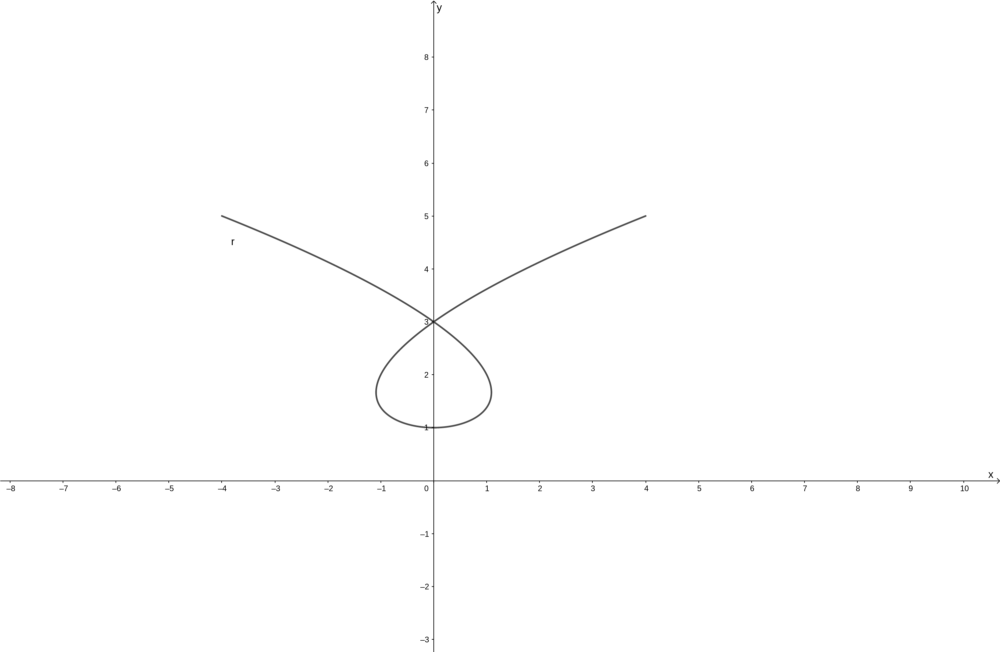
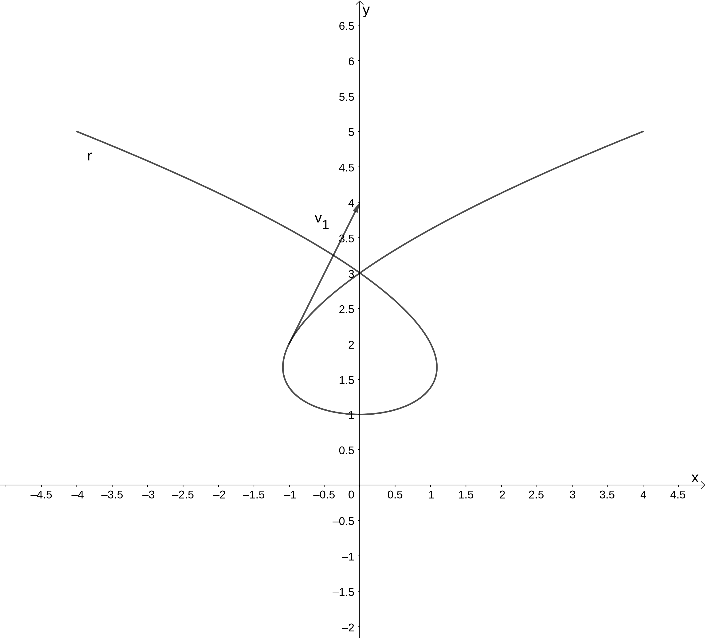
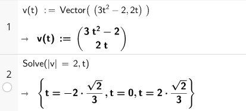
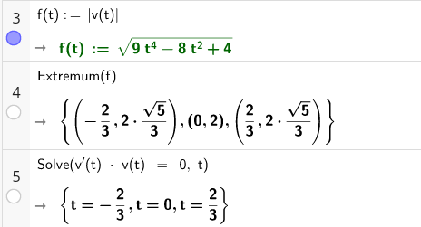

Oppgaveløsninger
Innhold
Heldagsprøver og eksamener
Eksamen - høsten 2018
Del 1 - Oppgave 8
Vi har \(f(x) = e^(x-1)\), og at \(f'(x) = e^(x-1)\cdot (x-1)' = e^(x-1) = f(x)\).
Vi kan så sette opp ettpunktsformelen, som sier at en linje gjennom et punkt \((x_0, y_0)\) med stigningstall \(a\) er på formen \[y - y_0 = a(x - x_0).\] Vi kan si at tangenten til grafen går gjennom origo \((0,0)\) når tangentent tangerer i \(x=b\). Ettpunktsformelen gir oss da \[y - f(b) = f'(b) (x - b).\] Dette kan vi uttrykke som \[y = f'(b)x + (f(b) - f'(b)\cdot b).\] Vi har tidligere sett at \(f(x)=f'(x)\) og vi får da \[y = f(b)x + f(b)(1-b).\] Siden linja skal gjennom origo, må konstantleddet \(f(b)(1-b)\) være null, altså er \((1-b)=0\) eller \(b = 1\) (\(f(x)\) er aldri null). Likninga til linja er da \[y = f(1)x = e^(1-1)x.\] Siden \(e^0=1\) får vi da det endelige svaret at likninga til linja er \[y=x.\]
Del 2 - Oppgave 1
Her er det mange minutter med klabb og babb midt i. Jeg beklager.
Del 2 - Oppgave 2
Del 2 - Oppgave 3
Del 2 - Oppgave 4
Eksamen - våren 2018
Del 2 - Oppgave 5
- a
Tegner grafen i Geogebra ved å bruke
r = Kurve(t^3 - 2t, t^2 + 1, t, -2, 2). Vi får da en figur som ser ut som følger.
- b
Finner fartsvektoren ved å derivere posisjonsvektoren med hensyn på tiden, og får dermed \[\vec{r}'(t) = \vec{v}(t) = \left[ 3t^2-2, 2t\right],\quad t\in \mathbb{R}.\] Fartsvektoren ved \(t=-1\) er da \(\vec{v}(-1) = \left[1, -2\right]\). Vi finner banefarten ved å ta absoluttverdien av denne \(|\vec{v}(-1)|=\sqrt{1^2 + (-2)^2} = \sqrt{5}\). Vi kan tegne denne fra punktet gitt av \(\vec{r}(1)\) ved å bruke kommandoen
Vektorog angi start- og sluttpunkt, altsåv_1 = Vektor(r(1), r(1) + r'(1))(merk at vi her finner fartsvektoren ved å derivere posisjonsvektoren direkte i uttrykket).
- c
Dette kan løses i CAS som vist under. Her har vi først definert fartsvektoren som en funksjon av tiden (vi kunne også funnet denne via å derivere posisjonsvektoren), før vi løser likningen \[|\vec{v}(t)|=2\] ved å bruke
Løs-kommandoen og gitsom variabel til denne.
Som vi ser av figuren over er banefarten til partikkelen lik 2 når \[t = -2\cdot\frac{\sqrt{2}}{3}\vee t=0\vee t=2\cdot\frac{\sqrt{2}}{3}\]
- d
Banefarten til partikkelens ekstremalverdier kan vi finne ved å lage en ny funksjon for banefarten til partikkelen, som da er absoluttverdien til fartsvektoren, dette gjør vi i celle 3 i figuren under.
Banefarten har altså ekstremalverdier for \(t=-\frac{2}{3}\vee t=0\vee t=\frac{2}{3}\) (\(y\) -verdiene til disse punktene, som vist i celle 4 gir oss partikkelens fart, siden dette er funksjonsverdiene til banefartfunksjonen vår).
For å vise at dette samsvarer med tidspunktene partikkelens farts- og akselerasjonsvektor står vinkelrett på hverandre, kan vi forsøke å løse likningen \(\vec{v}'(t) \cdot \vec{v}(t) = 0\), siden akselerasjonsvektoren er den deriverte av fartsvektoren. Som vist i celle 5 under, får vi da de samme \(t\) -verdiene som ekstremalpunktene til banefarten.
Vi har da vist det oppgavenber oss om å vise.

Sinus R1
8.183
- a
- Tegn grafen til \[\vec{r}(t) = [t^2 + 2, 9t - t^3]\]
- b
- Finn en parameterframstilling for tangenten \(T\) i det punktet på grafen som svarer til \(t = 1\).
- c
- Et annet punkt på grafen til \(\vec{r}\) har en tangent som er parallell med tangenten til \(T\). Finn en parameterframstilling for denne tangenten.
Løsning
Tegner grafen til \(\vec{r}\) ved å bruke Kurve-kommandoen i Geogebra. Valgte her å tegne \(\vec{r}(t)\) for \(t\) -verdier \(t\in [0, 10]\)

Finner først \(\vec{r}(1) = [3, 8]\), altså skal linja gjennom punktet \((3, 8)\). En retningsvektor for linja, kan finnes som fartsvektoren til \(\vec{r}\), dette kan vi gjøre ved å deriver. \(\vec{r}'(t) = \vec{v}(t) = [2t, 9 - 3t^2]\). evaluert i \(t=1\) gir dette \(\vec{v}(1) = [2, 6]\).
en parameterframstilling for tanten med retningsvektor \(\vec{v}=\) gjennom punktet \((3,8)\) i punktet er da \[T : \begin{cases} x(t) = 2t + 3 \\ y(t) = 6 t + 8 \end{cases},\] hvor koeffisientene 2 og 6 er hentet fra \(\vec{v}(1)=[2,6]\) og konstantleddene 3 og 8 er hentet fra punktet linja skal gjennom, \((3,8)\).
vi ønsker å finne en verdi for \(t\) som gjør at \(\vec{v}(t) = k \cdot [2, 6]\). altså er \[\begin{align*} 2t &= 2k \\ 9 - 3 t^2 &= 6k \end{align*}\]
da er \(6k = 6t\), og får \(9 - 3 t^2 = 6t\). vi skal da løse \[\begin{align*} &3t^2 + 6t - 9 = 0 \\ &t = \frac{-6 \pm \sqrt{6^2 - 4\cdot 3\cdot (-9)}}{2\cdot 3} \\ &t = \frac{-6 \pm \sqrt{144}}{6} \\ &t = -1 \pm 2 \\ &t = -3 \vee t = 1 \end{align*}\]
\(t = 1\) er definisjonen på oppgaven, altså uinteressant, \(t = -3\) gir den nye parameterframstillinga.
Når \(t=-3\) får vi retningsvektoren \(\vec{v}(-3) = [-6, -18]\). Den nye tangenten skal gjennom punktet definert av \(\vec{r}(-3) = [11, 0]\), altså skal den nye tangenten gjennom \((11, 0)\).
Vi får da parameterframstillinga for den nye tangenten, \(K\), som da er parallell med \(T\), til å være \[K : \begin{cases} x(t) = -6 t + 11 \\ y(t) = -18 t \end{cases}\]
Vi har da løst oppgava.
Tillegg:
Vi kan gjøre den siste parameterframstillinga penere ved å se at størrelsen til retningsvektoren ikke har noe å si (vi har ikke fått noen spesifikke verdier for \(t\)). Vi kan da bruke at \([-6, -18] = -6\cdot [1, 3]\), altså at \([-6, -18]\) er parallell med \([1, 3]\), og heller bruke dette som retningsvektor.
Vi får da \[K : \begin{cases} x(t) = t + 11 \\ y(t) = 3t \end{cases}\] Dette kunne vi også gjort for \(T\).